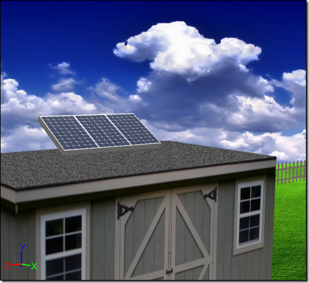
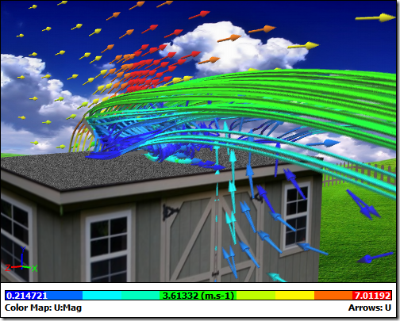

CFD for Solar Panels
Solar panels are solid-state, right? No moving parts and certainly no fluid flow - unless you count the rivers of electrons flowing in a semi-conductor. So what role is there for Computational Fluid Dynamics (CFD)? Once installed, how can you be sure that those brackets holding the panels in place are strong enough? Or even if your roof is strong enough to cope with the wind loading on the solar panels? Remain calm, CFD is here to help in the form of Caedium Professional.
Solar Panel Mounted on a Shed Roof
Once a solar panel is mounted on a roof it has to withstand wind loading from any direction. The worst case scenario is a freak wind gust from behind an angled panel on a flat roof. Flat-mounted panels on flat roofs are not an option as they would only a limited exposure to the sun around noon, playing havoc with your breakeven calculations.
There are a few options open to you:
- Wait for the freak wind gust and measure the forces directly on an installed solar panel - dangerous, unreliable and you could wait a lifetime for just the right wind gust.
- Bolt the solar panel to the top of a moving van and drive it at the same test speed as your worst-case freak wind gust - reliable but dangerous (and illegal) for the driver and other users of the road.
- Conduct a wind tunnel test - reliable, safe, and costly.
- Perform a CFD simulation in the comfort of your office - reliable, safe, and inexpensive.
CFD Simulation of Air Flow Over a Solar Panel Mounted on a Shed Roof
Ideally you'd like to use a well documented wind tunnel test case to benchmark your CFD simulations. If such a case doesn't exist then it would be prudent to commission one.
What can you expect to gain from a CFD simulation performed by Caedium Professional?
You can predict forces, such as lift and drag, to lead the design of mounting brackets.
 Lift and Drag Forces on Solar Panel
Lift and Drag Forces on Solar Panel
You can display velocity vectors, streamlines, and contours to visualize the air flow around the panels and to aid in their location on a roof.
Velocity Vectors Colored by Velocity Magnitude, Streamlines, and Velocity Magnitude Contours
Pressure Coefficient Contours on Symmetry Plane and Surfaces
With trusted CFD results in hand, you are now free to design your solar panel mounts and locate the panels with confidence.
Feedback
Questions? Ideas? Problems?

Comments
CFD for Solar Panels
Is there any example how to calculate this kind of structure in Caedium?
How to set up wind etc.?
best regards
Tomaz
Similar to tutorial
The simulation is very similar to the tutorial "Flow Over a Rotating Wheel with Moving Ground", except you can ignore the rotating wheel and moving ground setup.
initial velocity
Hello
For a couple of days I am checking your tutorials, and youtube links. I already installed the Trial version.
And as far as for now, I can say that it seems you did a splendid job! The application is made in kind of user-friendly interface, very convenient to use with cooperation of this kind of tutorials.
I intend to mount two solar panels, and it seems Caedium can be of help in here.
Here is what I wanted to ask you: in the "Flow Over a Rotating Wheel with Moving Ground" tutorial, you used the initial velocity of 44.7 m/s (100mph).
How did you get that value? From the local meteorological station or particular wind map?
But what is the name of that value? 3 second gust wind speed? Mean hourly wind speed?
Or something else?
Thank you for the reply.
P.S.
By the way, do you have some kind of discount for students on Professional version?
You decide the wind speed
I didn't use 44.7 m/s for the example here, it was more like 5 m/s. It was an arbitrary choice.
Yes, we offer student discounts - for details see the FAQ "Do you offer academic discounts?".
Thank you for the reply
Thank you for the reply Symscape.
I did not mean here, but in topic "Flow Over a Rotating Wheel with Moving Ground" you used 44.7 m/s as an initial wind velocity:
quote:
"The reference velocity can be used to initialize the simulation and to specify the inlet velocity. In this tutorial you will set a reference velocity of 44.7 m/s (100mph) in the X-direction."
In here you took 5m/s arbitrary. Ok.
But if I would like to do the exact analysis like you described in here, but with real, precise initial wind velocity, not arbitrary one, than how would I obtain that value?
From the meteorological station data, but what would that value be? Mean hourly wind speed?
Maximum wind loads
The reference velocity and initial velocity are your choice based on what you want to achieve with your simulation. I would guess that the most important condition is maximum likely wind speed so that you can determine whether your support structure can cope with the wind loads.
The rotating wheel wind speed corresponds to the wheel moving through air at 100 mph. It has nothing to do with meteorological data.
Thank you for the reply. But
Thank you for the reply.
But I am not sure structures are designed according to the maximum recorded wind.
In that case, all structures will be too big.
When it comes to the calculations by hand, a so called 3 gust wind speed is used - which represents the highest continual gust over a 3 second period, with probability of being exceeded 1 in 50 per year.
But this is related to hand calculations and they are completely different than CFD. They are based on a lot of approximations.
Solar panels on roof
I am trying to calculate the pressure coefficient of solar panels on a flat roof.
Exactly what is done in this example.
I followed the steps of the spinning wheel until the velocity vectors.
However I run into a couple of problems.
Firstly I have made a big box, which serves as the control volume, inside I make a smaller rectangular box that represents the house.
Currently no solar panels are present on the roof.
Except for the outlet and inlet I have defined the different faces to be walls. Is this correct?
Secondly according to the theory I should get negative cp's at the top of the building but this is not the case.
Is this because I haven't attached the ground and the building together?
Thirdly I would like to know how I can define an offset between the roof and the solar panel?
That's all for now but I will have more questions after that I guess :)
Try the tutorials first
I suggest you first get some experience setting up and running simulations as defined in the tutorials. For example:
As in the geometry creation tutorial you have to construct a single flow volume, typically you'll need to subtract your building and solar panel from the larger control volume.